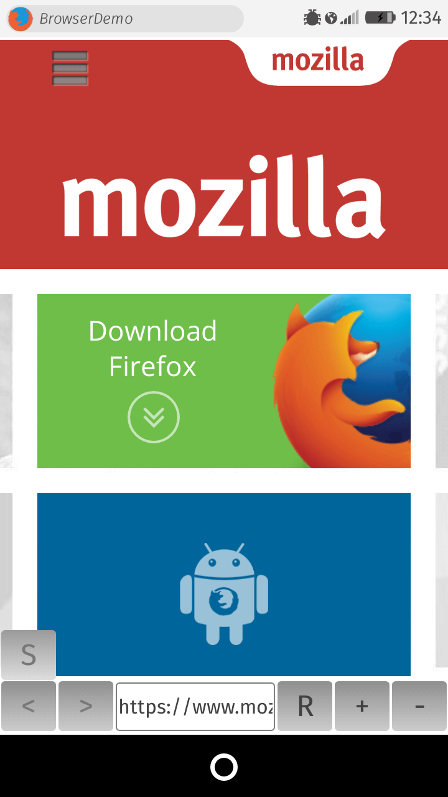
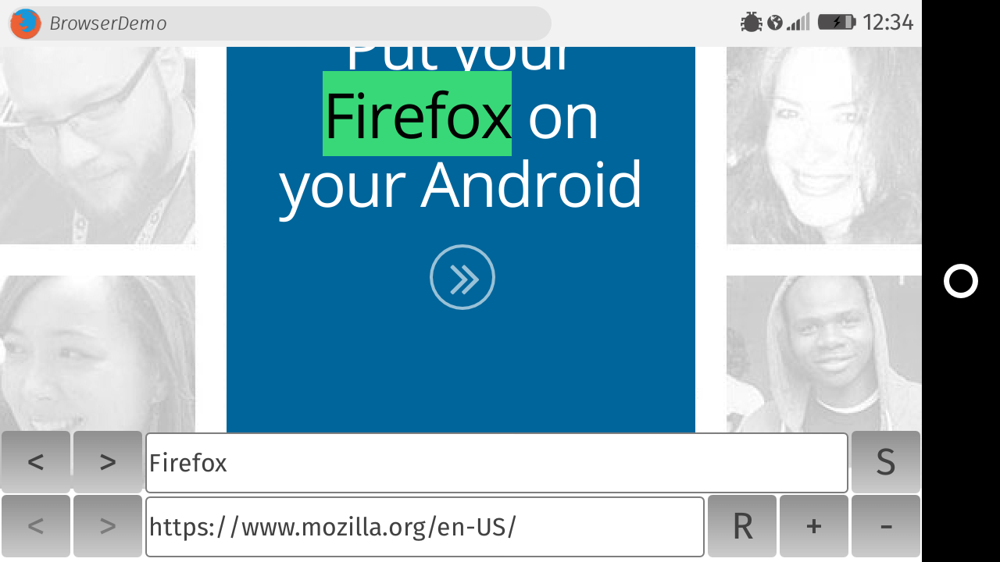

Non-standard
This feature is non-standard and is not on a standards track. Do not use it on production sites facing the Web: it will not work for every user. There may also be large incompatibilities between implementations and the behavior may change in the future.
The HTML Browser API is an extension of the HTML <iframe> element that allows web apps to implement browsers or browser-like applications. It was original used in Firefox OS to implement browser applications, and since Firefox 47 it is also available to desktop chrome code.
It consists of two major parts:
- Custom
<iframe>attributes: by adding amozbrowserattribute to the<iframe>element we can make it appear like a top-level browser window to the embedded content. This means thatwindow.top,window.parent,window.frameElement, etc. should not reflect the frame hierarchy. We can also embed an open web app in the iframe if we include an additionalmozappattribute containing the path to the app's manifest. - API extensions: the API includes several new methods and events to manipulate and listen for changes to the embedded content's state, interited by the
HTMLIFrameElementinterface.
In addition to that, it's also possible to embed a Firefox OS app in a browser <iframe>. In that case the content is loaded within the appropriate app context (such as permissions).
Note: An iframe enhanced by the Browser API is commonly referred to as a "browser iframe". We'll be using this term throughout the current article, and other parts of the documentation.
Demo
To demonstrate basic usage of this API, we have created a simple Browser API demo that provides buttons allowing you to (re)load web pages, stop loading, move forward and back in history, and zoom in and out of the page.

To run the demo, the best approach is to clone the GitHub repo locally (or just download it directly if you don't do GitHub), open WebIDE, open the repo as a Packaged App, then run it either on a simulator or a real device if you have one. See our WebIDE documentation for more assistance if needed.
In any case, you should at least download the repo and refer to the code as you read the sections below.
The HTML
An <iframe> is turned into a browser iframe by setting the mozbrowser attribute on it:
<iframe src="http://mozilla.org" mozbrowser>
Note that in order to embed an Open Web App, you have to also include a mozapp attribute, containing the path to the app's manifest:
<iframe src="http://hostname.tld" mozapp='http://path/to/manifest.webapp' mozbrowser>
In addition, the <iframe> can be loaded in its own child process — separate to the page embedding this frame — by including the remote attribute.
<iframe src="http://hostname.tld" mozbrowser remote>
Warning: This last attribute is necessary for security reasons if you plan to load content from an untrusted/unknown origin. If you don't use it, you run the risk of your application being compromised by a malicious web site.
Aside from the iframe, there are some basic controls: <button> elements, a simple <form> to implement the browser controls, and a search bar. The search bar also contains buttons, as well as a form to type search requests into. You can see the full HTML listing here.
The manifest.webapp
There are a few special considerations needed for the app manifest of any Firefox OS app that implements functionality based on the Browser API (see our manifest source here.)
Any application that wants to embed a browser iframe must have the browser permission set:
{
"permissions": {
"browser": {}
}
}
Because it is a privileged API, you need to also specify this, in the type field:
"type": "privileged"
Note that if you wish to embed an open web app in your browser iframe, you must also set the embed-apps permission:
{
"permissions": {
"browser": {},
"embed-apps": {}
}
}
The JavaScript implementation
To wire up the functionality required by our simple browser, we've written some basic JavaScript (see the full JavaScript listing.)
Wiring up the back and forward buttons
Early on in the code we implement two simple event listeners to move the browser back and forward in history when the relevant buttons are pressed:
back.addEventListener('touchend',function() {
browser.goBack();
});
fwd.addEventListener('touchend',function() {
browser.goForward();
});
The functions can be handled using the Browser API HTMLIFrameElement.goBack() and HTMLIFrameElement.goForward() methods. You'll also notice that we're also firing these functions on the touchend event, which is effective as Firefox OS devices are generally touchscreen.
Enabling/disabling the back and forward buttons
You will also notice after a bit of surfing that the back and forward buttons are disabled when you cannot move backwards/forwards, and enabled when you can. We did this with the following functions:
function canMoveBwd() {
var request = browser.getCanGoBack();
request.onsuccess = function() {
if (request.result) {
back.disabled = false;
console.log("It's possible to navigate the history backward.");
} else {
back.disabled = true;
console.log("It's not possible to navigate the history backward.");
}
}
}
function canMoveFwd() {
var request = browser.getCanGoForward();
request.onsuccess = function() {
if (request.result) {
fwd.disabled = false;
console.log("It's possible to navigate the history forward.");
} else {
fwd.disabled = true;
console.log("It's not possible to navigate the history forward.");
}
}
}
So here we have functions to detect whether we can navigate forwards/backwards in the history at any point. These use HTMLIFrameElement.getCanGoBack() and HTMLIFrameElement.getCanGoForward(), which return a Boolean defining whether backward/forward navigation is possible at this point in the history. If true is returned, the relevant button is disabled, and if false is returned, the relevant button is enabled.
{kind=link}
Note that Promise versions of Browser API DOM request methods also exist, so you can use async promise style syntax if you so wish. For example:
function canMoveBwd() {
browser.getCanGoBack().then(function(result) {
if (result) {
back.disabled = false;
console.log("It's possible to navigate the history backward.");
} else {
back.disabled = true;
console.log("It's not possible to navigate the history backward.");
}
});
}
Implementing the URL bar
The URL bar for our simple browser is a <form> containing a single text <input>. When you tap the URL bar, you can enter a URL using the built-in Firefox OS keyboard (although note that we haven't implemented anything sophisticated in this app, like autofilling the http://, etc.). When you press the keyboard's return button, the 'submit' event is fired, which we handle like this:
urlForm.addEventListener('submit',function(e) {
e.preventDefault();
browser.src = urlBar.value;
urlBar.blur();
});
We first call preventDefault() to stop the form just submitting and reloading the page — which is really not what we want. We then set the browser iframe's src attribute to equal the value of the URL bar, which causes the new URL to be loaded in the iframe. Finally, we call blur() on the url bar to stop focusing it, so the keyboard moves off the screen, allowing us to get our full screen view back.
There's another event listener added later on in the code that listens for the mozbrowserlocationchange event. When this fires, we set the value inside the URL bar input to be equal to the event object detail property — this is so that the URL displayed continues to match the website being shown when the user navigates back and forth through the history.
browser.addEventListener('mozbrowserlocationchange', function (e) {
urlBar.value = e.detail;
});
Zooming in and out
The browser content can be programmatically zoomed in and out using the HTMLIFrameElement.zoom() method. This takes a single method — a zoom factor — which dictates the percentage to zoom in or out by. For example, 1.1 would mean "zoom in by 10%", and 0.9 would mean "zoom out by 10%".
var zoomFactor = 1;
...
zoomIn.addEventListener('touchend',function() {
zoomFactor += 0.1;
browser.zoom(zoomFactor);
});
zoomOut.addEventListener('touchend',function() {
zoomFactor -= 0.1;
browser.zoom(zoomFactor);
});
Controlling the stop/reload button
Next, let's talk about the stop/reload button. As in a traditional browser, this is a single button that acts as a reload button when the page has finished loading, and a stop button while the page is loading (each with a different icon displayed). This is implemented in our sample app with the following functions:
browser.addEventListener('mozbrowserloadstart',function() {
stopReload.textContent = 'x';
});
browser.addEventListener('mozbrowserloadend',function(e) {
canMoveBwd();
canMoveFwd();
stopReload.textContent = 'R';
console.log(e.detail.backgroundColor);
controls.style.background = e.detail.backgroundColor;
});
When the mozbrowserloadstart event fires, the latest page request has started loading, and we change the button to a cross to indicate "stop". When the mozbrowserloadend event fires, the latest page request has finished loading, and at this point we want to change the icon back to the reload icon (in this case we are just using a capital "R"). Notice that this is also where we call the canMoveBwd() and canMoveFwd() functions we discussed earlier — it makes sense to update the status of the back and forward buttons after each page reload.
In addition, the background of the controls UI bar is changed to the background color of the site that has just loaded, to provide a more integrated experience — this can be read out of the event object's e.detail.backgroundColor value. When the front page of https://developer.mozilla.org is loaded, for example, the e.detail.backgroundColor value reported is rgb(0, 83, 159).
Back to the stop/reload button — updating the icon is nice, but we also need to update the functionality that is invoked when each icon is displayed. We do this with the following function, which runs the HTMLIFrameElement.stop() method to stop the page loading if the button is displaying a cross, and the HTMLIFrameElement.reload() method to reload the page otherwise.
stopReload.addEventListener('touchend',function() {
if(stopReload.textContent === 'x') {
browser.stop();
} else {
browser.reload();
}
});
Implementing the search bar
Let's now turn our attention to implementing browser search using the Browser API. Tap the "S" button and try it out. Try searching for "Firefox" on the default page when the app first loads.

So how do we do this? First, we declare a searchActive variable as false, which influences behaviour later on. Then, we disable the "previous" and "next" search item buttons so that they don't run anything unless there are search items to cycle between.
var searchActive = false; prev.disabled = true; next.disabled = true;
Next, we add an event listener to the searchForm so that when it is submitted, the HTMLIFrameElement.findAll() method is used to do a search for the string entered into the search input element (searchBar) within the text of the current page (the second parameter can be changed to 'case-insensitive' if you want a case-insensitive search.) We then enable the previous and next buttons, set searchActive to true, and blur() the search bar to make the keyboard disappear and stop taking up our screen once the search is submitted.
searchForm.addEventListener('submit',function(e) {
e.preventDefault();
browser.findAll(searchBar.value, 'case-sensitive');
searchActive = true;
prev.disabled = false;
next.disabled = false;
searchBar.blur();
});
With this all done, you'll see your search results are highlighted; you can cycle through these using the HTMLIFrameElement.findNext() method (specify forward and backward to go in either direction through the results), which is what our next two event listeners do:
prev.addEventListener('touchend',function() {
browser.findNext("backward");
});
next.addEventListener('touchend',function() {
browser.findNext("forward");
});
The last event listener in this section controls what happens when the search toggle button is pressed. We switch the class values on the element to toggle the show/hide. If searchActive is true, meaning that a search has been done, we want to disable the search as we hide the search options — we disable the buttons, make searchActive false, clear the entered search value, and run HTMLIFrameElement.clearMatch(), which gets rid of any stored/highlighted search results from the browser.
searchToggle.addEventListener('touchend',function() {
if(search.getAttribute('class') === 'search') {
search.setAttribute('class', 'search shifted');
} else if(search.getAttribute('class') === 'search shifted') {
search.setAttribute('class', 'search');
if(searchActive) {
browser.clearMatch();
searchActive = false;
prev.disabled = true;
next.disabled = true;
searchBar.value = '';
}
}
});
Note that whenever one of the search-related methods is invoked, a mozbrowserfindchange event is fired to allow you to react to search changes in a more precise way if desired:
//browser.addEventListener('mozbrowserfindchange', function(e) {
// can react to find changes if required
//})
Note: These search-related methods only work in Firefox 2.5+.
Reporting errors
We've got one more piece of code to mention from our source:
browser.addEventListener('mozbrowsererror', function (e) {
console.log("Loading error: " + e.detail);
});
This simple listener logs an error message to the console when an error with the browser iframe is encountered. Note that this doesn't include simple errors due to incorrect URLs being entered. See the mozbrowsererror page for more details.
Other methods and events
We've only covered a fraction of the new methods and events that the Browser API adds. There are many others covering a variety of functions and edge case requirements:
- For the full list of methods, check out the
HTMLIFrameElementpage. - For the full list of events, see the Browser API landing page events section.